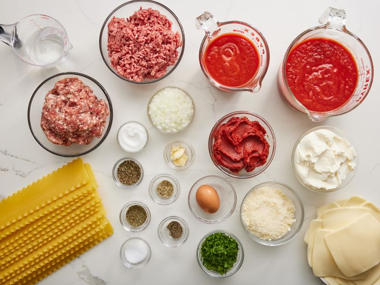
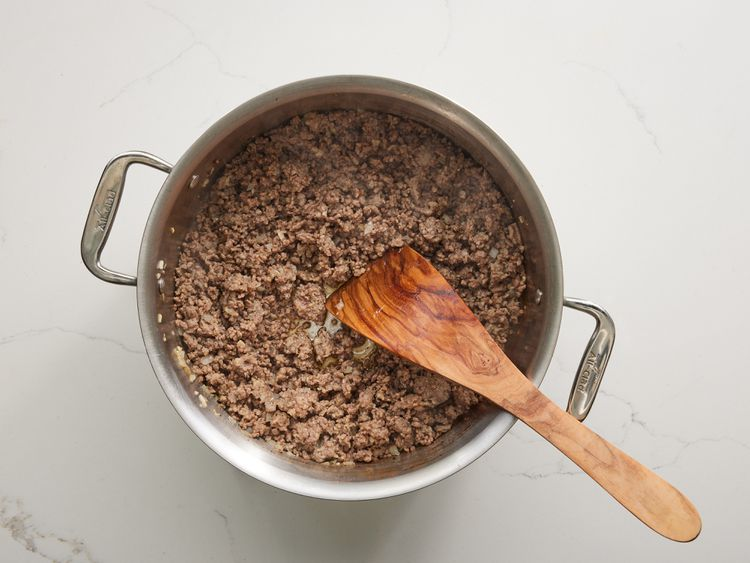
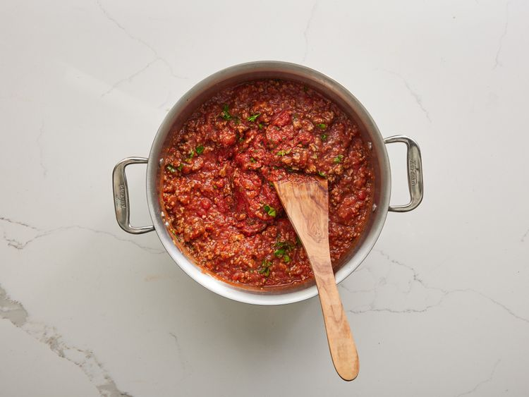
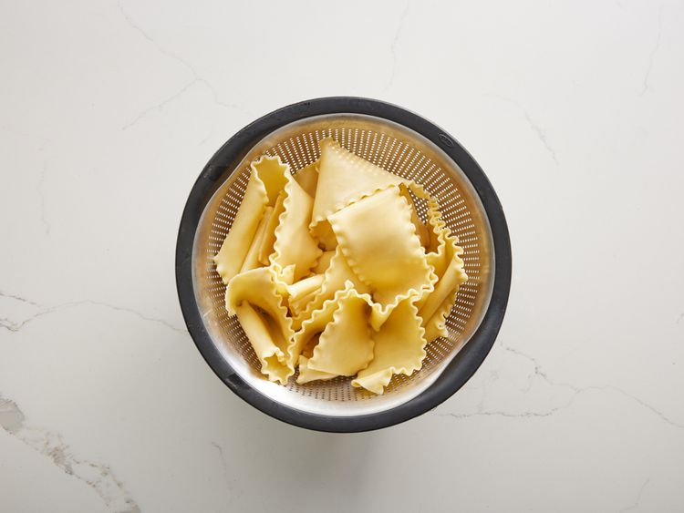
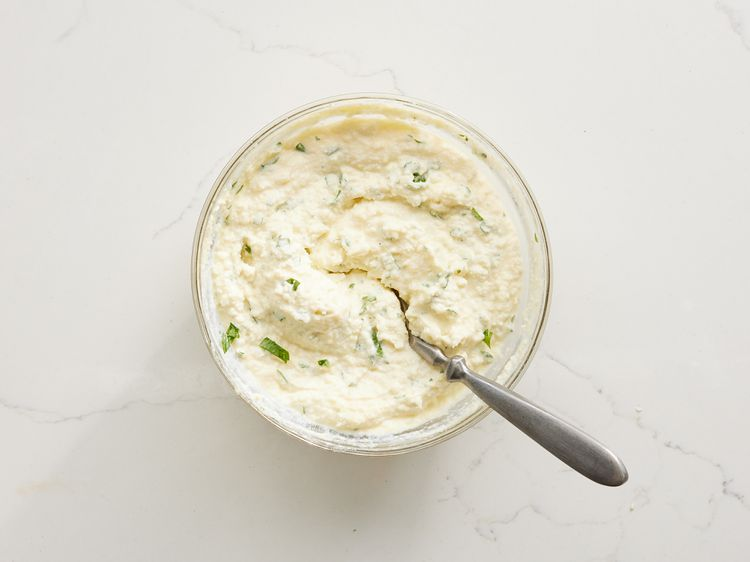
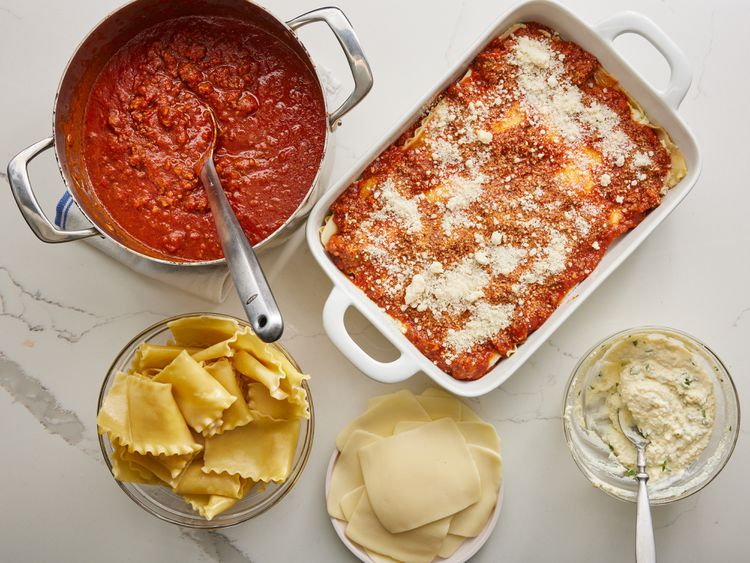
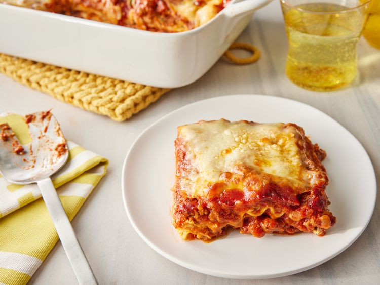

Lasagna

World's Best Lasagna
This lasagna recipe takes a little work, but it is so satisfying and filling that it's worth it!
Submited by | Updated on February 5, 2026
Ingredients
The Allrecipes community adores this lasagna recipe because it's incredibly customizable, so you can easily alter the ingredient list to suit your needs. If you want to stay true to the original recipe, though, these are the ingredients you'll need to add to your grocery list:
-
1 pound sweet Italian sausage
-
¾ pound lean ground beef
-
½ cup minced onion
-
2 cloves garlic, crushed
-
1 (28 ounce) can crushed tomatoes
-
2 (6.5 ounce) cans canned tomato sauce
-
2 (6 ounce) cans tomato paste
-
½ cup water
-
2 tablespoons white sugar
-
4 tablespoons chopped fresh parsley, divided
-
1 ½ teaspoons dried basil leaves
-
1 ½ teaspoons salt, divided, or to taste
-
1 teaspoon Italian seasoning
-
½ teaspoon fennel seeds
-
¼ teaspoon ground black pepper
-
12 lasagna noodles
-
16 ounces ricotta cheese
-
1 large egg
-
¾ pound mozzarella cheese, sliced
-
¾ cup grated Parmesan cheese
Steps
-
Step 1
Gather all your ingredients.

Dotdash Meredith Food Studios -
Step 2
Cook sausage, ground beef, onion, and garlic in a Dutch oven over medium heat until well browned.

Dotdash Meredith Food Studios -
Step 3
Stir in crushed tomatoes, tomato sauce, tomato paste, and water. Season with sugar, 2 tablespoons parsley, basil, 1 teaspoon salt, Italian seasoning, fennel seeds, and pepper. Simmer, covered, for about 1 ½ hours, stirring occasionally.

Dotdash Meredith Food Studios -
Step 4
Bring a large pot of lightly salted water to a boil. Cook lasagna noodles in boiling water for 8 to 10 minutes. Drain noodles, and rinse with cold water.

Dotdash Meredith Food Studios -
Step 5
In a mixing bowl, combine ricotta cheese with egg, remaining 2 tablespoons parsley, and 1/2 teaspoon salt.

Dotdash Meredith Food Studios -
Step 6
Preheat the oven to 375 degrees F (190 degrees C).
-
Step 7
To assemble, spread 1 ½ cups of meat sauce in the bottom of a 9x13-inch baking dish. Arrange 6 noodles lengthwise over meat sauce, overlapping slightly. Spread with 1/2 of the ricotta cheese mixture. Top with 1/3 of the mozzarella cheese slices. Spoon 1 ½ cups meat sauce over mozzarella, and sprinkle with 1/4 cup Parmesan cheese.

Dotdash Meredith Food Studios -
Step 8
Repeat layers, and top with remaining mozzarella and Parmesan cheese. Cover with foil: to prevent sticking, either spray foil with cooking spray or make sure the foil does not touch the cheese.

Dotdash Meredith Food Studios -
Step 9
Bake in the preheated oven for 25 minutes. Remove the foil and bake for an additional 25 minutes.

Dotdash Meredith Food Studios -
Step 10
Let the lasagna rest at room temperature for about 15 minutes before cutting; this helps it set and firm up.

Dotdash Meredith Food Studios